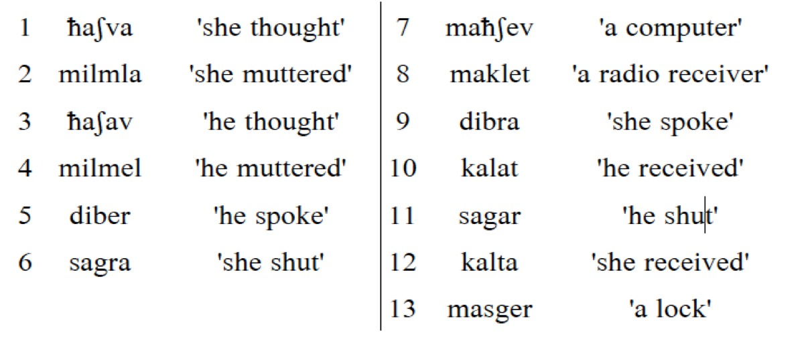
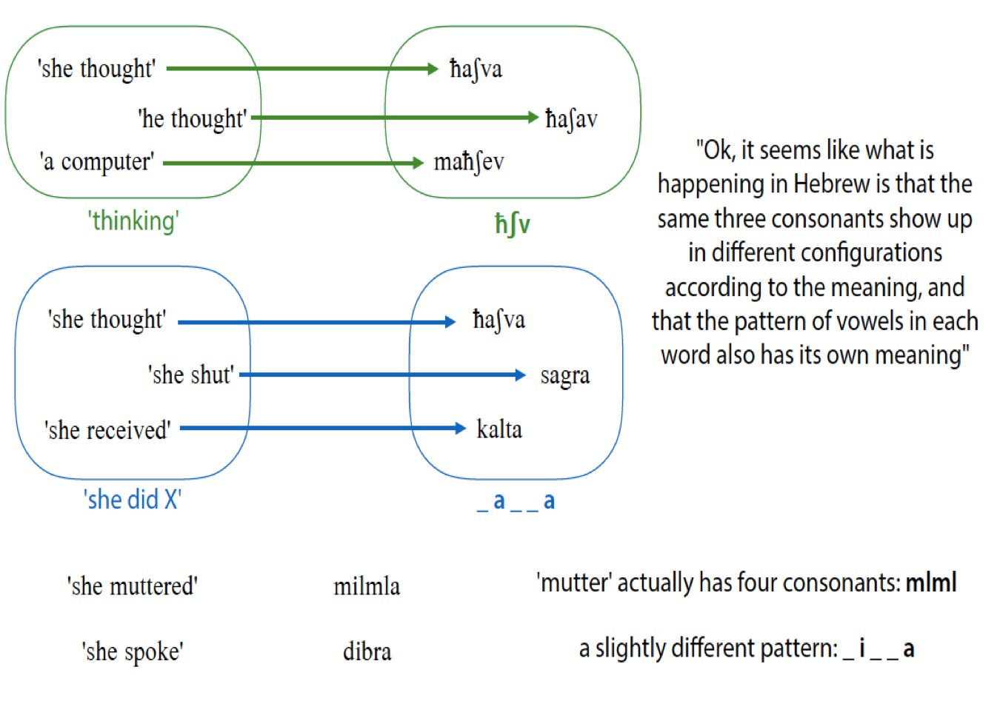

Link to the EHT Team - Great video explanation
Office: AP&M 3351E
Office Hours: Tuesdays, 11am-12pm
What is a morphological analysis?
How does one conduct an analysis of data?
What deadly assumptions can lead me astray?
A fun example!
What does a good morphological analysis look like?
Description: What’s going on in the data?
How is this language accomplishing this linguistic task?
What is the relationship between form and meaning here?
Prediction: Does the analysis you’ve posited accurately predict new data?
Can it generate new grammatical forms? Does it generate only grammatical forms?
This is a formalist, generative approach
Explanation: Is your analysis explicable or explanatory in terms of how morphological systems usually are?
Is there any element of nature which can explain the data patterning in this way?
This is a functionalist approach
Don’t worry about the last two for LIGN 120 assignments!
Most problems involve answering a question like ‘How is ____ coded or marked in this language?’
“What is the process by which speakers mark something as ____?”
Sometimes, this is stated explicitly, but not always
Along with their ‘glosses’
You must be able to describe the patterns in the data
You must be able to account for all of the forms
Be able to identify the morphemes and what they mean
Be able to describe how they’re joined together
Be able to describe which allomorphs show up when
You must explain how your analysis is correct
Part of the task is teaching your colleagues how the system works
Explanation is an important part of your analysis
You will not get full credit for turning in a bare list of morphemes, glosses, and rules

(If you find another way you’d like, that’s great too! This is to get you started.)
| kahea | ‘eye’ | kahe | ‘eyes’ |
|---|---|---|---|
| bitia | ‘bead’ | biti | ‘beads’ |
| kĩa | ‘cassava tuber’ | kĩ | ‘cassava tubers’ |
| kahea | ‘eye’ | kahe | ‘eyes’ |
|---|---|---|---|
| bitia | ‘bead’ | biti | ‘beads’ |
| kĩa | ‘cassava tuber’ | kĩ | ‘cassava tubers’ |
| kahea | ‘eye’ | kahe | ‘eyes’ |
|---|---|---|---|
| bitia | ‘bead’ | biti | ‘beads’ |
| kĩa | ‘cassava tuber’ | kĩ | ‘cassava tubers’ |
| ### 3) Within those groups, look for recurring patterns of form |
| kahea | ‘eye’ | kahe | ‘eyes’ |
|---|---|---|---|
| bitia | ‘bead’ | biti | ‘beads’ |
| kĩa | ‘cassava tuber’ | kĩ | ‘cassava tubers’ |
| ### 3) Within those groups, look for recurring patterns of form |
| - “Weird, it looks like every singular form ends with /a/” |
|
kahe |
‘eye’ | kahe | ‘eyes’ |
|---|---|---|---|
|
biti |
‘bead’ | biti | ‘beads’ |
|
kĩ |
‘cassava tuber’ | kĩ | ‘cassava tubers’ |
| kahea | ‘eye’ | kahe | ‘eyes’ |
|---|---|---|---|
| bitia | ‘bead’ | biti | ‘beads’ |
| kĩa | ‘cassava tuber’ | kĩ | ‘cassava tubers’ |
… but you are in grave danger!
It’s usually not that easy, and you might accidentally make one of…
kĩ ‘Cassava Tuber’ (S. Barasano)
entregarse ‘To give up’ (Spanish)
on studjɛnt ‘He is a student’ (Russian)
Remember that ‘throw up’ is the same thing as ‘vomit’ (English)
Me voy a Walmart ‘I’m going to Walmart’ (Spanish)
Me gustan los gatos ‘I like cats’ (Spanish)
Mozhno li letat na samolyete ‘Can I fly on an airplane?’ (Russian)
Southern Barasano treats the plural as the ‘unmarked’ form
Many languages mark grammatical gender or noun class
Russian marks gender on verbs, but only in the past tense
Russian handles aspect by changing verbs, not adding additional morphemes
/rabotat/ ‘to work some’ (imperfective)
/pərabotat/ ‘to work’ (perfective)
Dâw (Amazonas) doesn’t overtly mark possession for inalienable relationships (e.g. your head)
Morphological distinctions can be made without adding segments
Languages can mark distinctions with tone, deletion, metathesis, nasality
Contrasts can be neutralized
Fusional languages will combine multiple meanings in hard-to-analyze ways
Spanish verb morphology is fusional
Comí enchiladas (‘I ate Enchiladas’)
Comes enchiladas (‘You eat Enchiladas’)
Carefully examine the data and determine the question
Group Data by shared elements of meaning
Within those groups, look for recurring patterns of form
Build hypotheses about some groups, then use them to make guesses about other groups
Try to break your analysis with other forms from the dataset





Semitic language words have ‘templates’ composed of discontinuous elements
Consonants serve as the ‘root’
Vowels mark tense, mood, aspect inflection, or fixed vowel patterns
The word’s CVCV ‘shape’ expresses other morphological meanings
Consonantal roots carry some meaning
Vowels and CVCV shape carry other types!
… but we’ve left one issue behind!
| ‘think’, ‘shut’, ‘receive’ | ‘speak’, ‘mutter’ |
|---|---|
| CaCaC ‘he Xed’ | CiCeC ‘he Xed’ |
| CaCCa ‘she Xed’ | CiCCa ‘she Xed’ |
You must be able to describe the patterns in the data
You must be able to account for all of the forms
You must be able to explain ‘How is ____ coded in this language?’
… but we want to do better than that
An elegant analysis will have a good balance of fit, complexity, and generality, while being cognitively plausible
Fit: How well does the analysis fit the data?
Generality: How much of the available data does it describe? Does it capture general patterns?
Complexity: Is there a way to handle the data which is less complex than the one you’re proposing?
Realism: Does it accurately reflect what we know of speakers’ actual grammatical systems?
An analysis which doesn’t fit the data isn’t a good analysis
Always make sure there are no words which break your analysis
This needs to come first
If you can explain every form but one, you’re probably not done
Try to write rules that account for larger chunks of the data
You’ll need to talk about lexical exceptions sometimes, but try not to
If you’re claiming every word has a different lexically determined allomorph, you’re probably doing it wrong
New or borrowed words should be adequately accounted for by your descriptions
Try to perform your analysis in a way that reflects how other languages work, too.
An analysis should be as simple as possible
Given two analyses which are functionally equivalent, the one which requires less machinery is better
Some analyses are necessarily complex, but always ask yourself if you can do the job with fewer moving parts
Your analysis should reflect a plausible grammar for the speakers
Something which requires speakers to be telepaths won’t fly
Your approach needs to be learnable
If you need to describe a new theory of morphology for a LIGN 120 homework, you’re probably off track
It won’t be a huge part of your grade
An inelegant solution is better than none at all
We understand that you’re still learning
… but do your best to make your analysis elegant
Treat the analysis as a hypothesis, then look for the data that doesn’t follow it
If it breaks down, tweak it or abandon it!
You must be able to describe the patterns in the data
You must be able to account for all of the forms
You must be able to explain ‘How is ____ coded in this language?’
Try to make your analysis optimally data-fitting, generalizable, simple, and realistic!
Morphological Analysis is the process of identifying form-meaning correspondences in a rigorous way
There are five easy steps which will help you break down most morphological problems
It’s easy to be led astray by glosses and your assumptions about how languages work, so check your assumptions
You want your analyses to be not just accurate, but elegant as well!